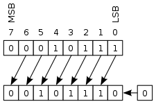
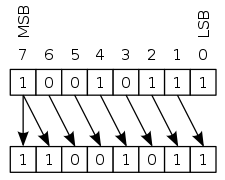

Hướng dẫn sử dụng toán tử thao tác bit trong JavaScript, hay còn gọi là toán tử bitwise trong JavaScript hoặc là toán tử Biwter trong JavaScript. Bạn sẽ học được cách viết cũng như cách sử dụng các toán tử thao tác bitwise như AND,OR,NOT,XOR, cũng như phép toán dịch bit trong JavaScript sau bài học này.
Bit trong JavaScript là gì?
Khái niệm bit
Trước khi tìm hiểu về các toán tử thao tác bit trong JavaScript, hãy tìm hiểu xem bit là gì nhé.
Trong cuộc sống hàng ngày, chúng ta thường sử dụng các số được viết dưới dạng thập phân viết bởi các chữ số từ 0 đến 9. Ví dụ như con được điểm 85 , giá yên hôm nay là 20.6 v.v..
Tuy nhiên máy tính thì không thể hiểu được nhiều số như vậy. Trong máy tính chỉ có hai trạng thái tồn tại, đó là có dòng điện chạy qua hoặc là không có dòng điện chạy qua mà thôi. Tương ứng với hai trạng thái đó là:
- 0 : không có dòng điện chạy qua
- 1 : có dòng điện chạy qua
Máy tính sẽ sử dụng hai số 0 và 1 tương ứng với hai trạng thái ở trên để biểu diễn tất cả các loại dữ liệu thông tin trong máy tính. Và bởi vì máy tính chỉ sử dụng được hai chữ số 0 và 1, nên các số khác 0 hoặc 1 cũng sẽ dùng hai chữ số này để biểu diễn thông qua một số quy tắc..
Chúng ta gọi các số mà chỉ được biểu diễn bởi hai số 0 và1 là số nhị phân. Và từng chữ số 0 hoặc 1 sử dụng để biểu diễn số nhị phân được gọi là 1 bit.
Nói cách khác, bit là đơn vị dữ liệu nhỏ nhất để biểu diễn số nhị phân trong máy tính.
bit cũng là đơn vị dữ liệu nhỏ nhất để biểu diễn tất cả các loại dữ liệu thông tin trong máy tính.
Khái niệm bit trong JavaScript cũng tương tự như trên, bit là đơn vị dữ liệu nhỏ nhất để biểu diễn tất cả các loại dữ liệu thông tin trong máy tính. Để xử lý bit, chúng ta sẽ cần dùng các toán tử thao tác bit trong JavaScript mà bạn sẽ được học ở phần dưới đây.
Ứng dụng của bit trong JavaScript
Không giới hạn trong JavaScript, ở trong khoa học máy tính, chúng ta có thể ứng dụng bit ở rất nhiều công việc khác nhau:
- Quản lý trạng thái game (Thông thường, ngủ,trúng độc, trạng thái chiến đấu v.v..)
- Quản lý trạng thái hệ thống (Chạy, lỗiv.v..)
- Quản lý trạng thái Lỗi trong chương trình
- Thao tác với màu RGB
- Quản lý quyền hạn của file trong Linux
- Quản lý giá trị phím bấm trong .Net (Shift,Control,Alt…)
- Xử lý thao tác tìm kiếm
….
Toán tử thao tác bit trong JavaScript là gì
Toán tử thao tác bit trong JavaScript hay còn gọi là toán tử bitwise hoặc toán tử Biwter, là các toán tử chuyên dụng được dùng để thao tác so sánh và dịch chuyển bit trong JavaScript.
Trong JavaScript, tất cả các loại số đều được xử lý nội bộ dưới dạng số thực 64 bit. Tuy nhiên khi sử dụng tới toán tử thao tác bit thì các số sẽ được chuyển về dạng số nguyên 32 bit trước khi được đem đi tính toán. Do vậy phần thập phân của số thực sẽ được bỏ đi (làm tròn), cũng như phần giá trị nếu vượt quá phạm vi biểu diễn của số nguyên 32 bit cũng sẽ bị bỏ qua.
Lại nữa, khi xử lý số với toán tử thao tác bit, các số này sẽ được chuyển về số nguyên 32 bit hệ cơ số 2, chứ không phải là ở dạng số thập phân thông thường, trước khi được xử lý.
Các loại toán tử thao tác bit trong JavaScript
Chúng ta có thể sử dụng 7 toán tử thao tác bit trong JavaScript như bảng dưới đây. Lưu ý là chúng chỉ được sử dụng để tính toán với bit mà thôi.
Bảng tổng hợp toán tử thao tác bitwise trong JavaScript
x & y ANDx | y OR~x NOTx ^ y XORx << n Phép toán dịch bit tráix >> n Phép toán dịch bit phải có dấux >>> n Phép toán dịch bit phải không dấu
Toán tử thao tác bit AND trong JavaScript
Toán tử thao tác AND bit so sánh các bit ở cùng vị trí của hai số với nhau, nếu giống nhau thì trả về giá trị 1 và khác nhau thì trả về giá trị 0.
Cú pháp AND bit trong JavaScript như sau:
x & y
Ví dụ:
let i = 85 & 15; |
Khi sử dụng bit AND để tính toán giữa hai số 85 và 15, trước hết biểu diễn hai số 85 và 15 dưới dạng số nhị phân. Lưu ý trong JavaScript thì kiểu let có kích thước 32 bit nên sẽ được biểu diễn bởi dãy số nhị phân gồm 32 chữ số như sau:
85 & 15 ---------- 85 = 0000 0000 0000 0000 0000 0000 0101 0101 15 = 0000 0000 0000 0000 0000 0000 0000 1111
Sau đó so sánh các bit(từng chữ số trong số nhị phân) có cùng vị trí trong hai số với nhau, nếu giống nhau thì trả về 1 và khác nhau thì trả về 0:
0000 0000 0000 0000 0000 0000 0101 0101 = 85 0000 0000 0000 0000 0000 0000 0000 1111 = 15 --------------------------------------- 0000 0000 0000 0000 0000 0000 0000 0101 = 5
Kết quả chúng ta thu về kết quả là số 5 trong hệ thập phân.
Toán tử thao tác OR bit trong JavaScript
Toán tử thao tác OR bit so sánh các bit ở cùng vị trí của hai số với nhau, và chỉ cần một trong hai bit có giá trị bằng 1 thì trả về giá trị 1, và trả về 0 trong các trường hợp còn lại.
Cú pháp OR bit trong JavaScript như sau:
x | y
Ví dụ:
let i = 85 | 15; |
Khi sử dụng bit OR để tính toán giữa hai số 85 và 15, trước hết biểu diễn hai số 85 và 15 dưới dạng số nhị phân.
85 | 15 ---------- 85 = 0000 0000 0000 0000 0000 0000 0101 0101 15 = 0000 0000 0000 0000 0000 0000 0000 1111
Sau đó so sánh các bit(từng chữ số trong số nhị phân) có cùng vị trí trong hai số với nhau, nếu một trong hai bit có giá trị bằng 1 thì trả về 1, và trả về 0 trong các trường hợp còn lại.
0000 0000 0000 0000 0000 0000 0101 0101 = 85 0000 0000 0000 0000 0000 0000 0000 1111 = 15 --------------------------------------- 0000 0000 0000 0000 0000 0000 0101 1111 = 95
Kết quả chúng ta thu về kết quả là số 95 trong hệ thập phân.
Toán tử thao tác NOT bit trong JavaScript
Toán tử thao tác NOT bit trả về giá trị đảo ngược của từng bit trong số. Nếu bit là 0 thì trả về 1 và ngược lại, nếu bit là 1 thì trả về 0.
Cú pháp NOT bit trong JavaScript như sau:
~x
Ví dụ:
let i = ~85; |
Khi sử dụng bit NOT để tính giá trị đảo ngược của số 85, trước hết biểu diễn số 85 dưới dạng số nhị phân.
~85 ---------- 85 = 0000 0000 0000 0000 0000 0000 0101 0101
Sau đó đảo ngược giá trị của từng bit trong số nhị phân:
0000 0000 0000 0000 0000 0000 0101 0101 = 85 --------------------------------------- 1111 1111 1111 1111 1111 1111 1010 1010 = -86
Kết quả chúng ta thu về kết quả là số -86 trong hệ thập phân.
Toán tử thao tác XOR bit trong JavaScript
Toán tử thao tác XOR bit so sánh các bit ở cùng vị trí của hai số với nhau, nếu chỉ một trong hai bit có giá trị bằng 1 thì sẽ trả về 1, và trả về 0 trong các trường hợp còn lại
Cú pháp XOR bit trong JavaScript như sau:
x ^ y
Ví dụ:
let i = 85 ^ 15; |
Khi sử dụng bit XOR để tính toán giữa hai số 85 và 15, trước hết biểu diễn hai số 85 và 15 dưới dạng số nhị phân.
85 & 15 ---------- 85 = 0000 0000 0000 0000 0000 0000 0101 0101 15 = 0000 0000 0000 0000 0000 0000 0000 1111
Sau đó so sánh các bit(từng chữ số trong số nhị phân) có cùng vị trí trong hai số với nhau, nếu chỉ một trong hai bit có giá trị bằng 1 thì sẽ trả về 1, và trả về 0 trong các trường hợp còn lại:
0000 0000 0000 0000 0000 0000 0101 0101 = 85 0000 0000 0000 0000 0000 0000 0000 1111 = 15 --------------------------------------- 0000 0000 0000 0000 0000 0000 0101 1010 = 90
Kết quả chúng ta thu về kết quả là số 90 trong hệ thập phân.
Phép toán dịch chuyển bit trong JavaScript
Chúng ta sử dụng 3 phép toán dịch bit trong JavaScript như sau:
x << n Phép toán dịch bit tráix >> n Phép toán dịch bit phải có dấux >>> n Phép toán dịch bit phải không dấu
Phép toán dịch chuyển bit sẽ dịch chuyển toán hạng đằng trước về phía trái hoặc về phía phải một lượng bằng với toán hạng đằng sau.
Khi dịch bit, phần giá trị bit nếu vượt qua 32bit sẽ bị loại bỏ.
Phép toán dịch bit qua trái trong JavaScript
Phép toán dịch bit qua trái trong JavaScript trả về giá trị là một số đã được dịch sang qua trái số bit đã được chỉ định.
Khi dịch chuyển bit qua trái, số 0 sẽ được thêm vào bên phải để lấp chỗ trống để lại sau khi dịch chuyển.

Cú pháp phép toán dịch bit trái trong JavaScript như sau:
x << n
Ví dụ:
let i = 21 << 2; |
Khi sử dụng phép toán dịch bit trái với số 21, trước hết biểu diễn số 21 dưới dạng số nhị phân, sau đó dịch số nhị phân qua trái lần lượt 1 bit như sau:
21 << 2 ---------- 0000 0000 0000 0000 0000 0000 0001 0101 = 21 --------------------------------------- 0000 0000 0000 0000 0000 0000 0010 1010 = 42 (Dịch sang trái 1 bit) 0000 0000 0000 0000 0000 0000 0101 0100 = 84 (Dịch sang trái 1 bit)
Kết quả chúng ta thu về số 84 trong hệ thập phân.
Phép toán dịch bit qua phải có dấu trong JavaScript
Phép toán dịch bit qua phải có dấu trong JavaScript trả về giá trị là một số đã được dịch sang phải số bit đã được chỉ định.
Khi dịch chuyển bit qua phải có dấu, bit thể hiện dấu là giá trị 0 hoặc 1 sẽ được thêm vào bên trái để lấp chỗ trống để lại, và do đó dấu của số sẽ được giữ nguyên.

Ngoài ra phần giá trị vượt qua phạm vi bên phải do bị dịch chuyển cũng sẽ bị bỏ đi.
Cú pháp phép toán dịch bit phải trong JavaScript như sau:
x >> n
Ví dụ:
let i = 21 >> 2; |
Khi sử dụng phép toán dịch bit phải với số 21, trước hết biểu diễn số 21 dưới dạng số nhị phân, sau đó dịch số nhị phân qua trái lần lượt 1 bit như sau:
21 >> 2 ---------- 0000 0000 0000 0000 0000 0000 0001 0101 = 21 --------------------------------------- 0000 0000 0000 0000 0000 0000 0000 1010 = 10 (Dịch sang phải 1 bit) 0000 0000 0000 0000 0000 0000 0000 0101 = 5 (Dịch sang phải 1 bit)
Kết quả chúng ta thu về số 5 trong hệ thập phân.
Phép toán dịch bit qua phải không dấu trong JavaScript
Phép toán dịch bit qua phải không dấu trong JavaScript trả về giá trị là một số đã được dịch sang phải số bit đã được chỉ định.
Khi dịch chuyển bit qua phải không dấu, chỉ có bit thể hiện dấu là số 0 sẽ được thêm vào bên trái để lấp chỗ trống để lại, và do đó dấu của số ban đầu sẽ không được giữ nguyên.
Ngoài ra phần giá trị vượt qua phạm vi bên phải do bị dịch chuyển cũng sẽ bị bỏ đi.
Cú pháp phép toán dịch bit phải trong JavaScript như sau:
x >> n
Trong trường hợp dịch chuyển bit qua phải không dấu với một số dương, phép toán này sẽ tương tự như với phép toán dịch chuyển bit qua phải có dấu
Ví dụ:
let i = 21 >>> 2; |
Khi sử dụng phép toán dịch bit phải với số 21, trước hết biểu diễn số 21 dưới dạng số nhị phân, sau đó dịch số nhị phân qua trái lần lượt 1 bit như sau:
21 >> 2 ---------- 0000 0000 0000 0000 0000 0000 0001 0101 = 21 --------------------------------------- 0000 0000 0000 0000 0000 0000 0000 1010 = 10 (Dịch sang phải 1 bit) 0000 0000 0000 0000 0000 0000 0000 0101 = 5 (Dịch sang phải 1 bit)
Kết quả chúng ta thu về số 5 trong hệ thập phân.
Tuy nhiên khi dịch chuyển bit qua phải không dấu với một số âm, xử lý sẽ khác đi. Ví dụ:
let i = 21 >>> 2; |
Có thể thấy với số âm thì dấu của nó sẽ không thể dữ nguyên mà bị thay đổi sau khi dịch chuyển bit qua phải không dấu.
Tổng kết
Trên đây Kiyoshi đã hướng dẫn bạn về toán tử thao tác bit trong JavaScript rồi. Để nắm rõ nội dung bài học hơn, bạn hãy thực hành viết lại các ví dụ của ngày hôm nay nhé.
Và hãy cùng tìm hiểu những kiến thức sâu hơn về JavaScript trong các bài học tiếp theo.
URL Link
HOME › học javascript - lập trình javascript cơ bản>>07. toán tử trong javascript